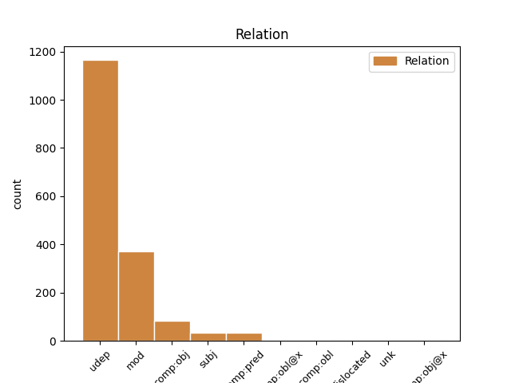
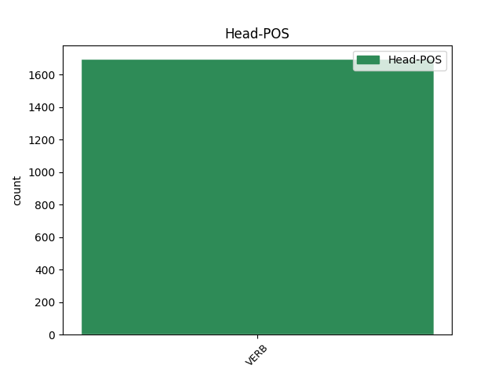
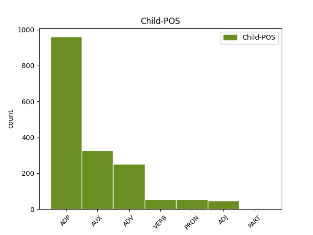

Distribution of features within this leaf



Agreement Rules sorted by frequency.
- When the dependent token is the underspecified dependency(udep) of the head token, and the head token is VERB and the dependent token is ADP.
1 इन _ _ _ _ 0 _ _ _
2 दोनों _ _ _ _ 0 _ _ _
3 देशों _ _ _ _ 0 _ _ _
4 के _ _ _ _ 0 _ _ _
5 बीच बीच ADP NST AdpType=Post|Case=Nom|Gender=Masc|Number=Sing|Person=3 14 udep _ AltTag=ADP-NOUN|ChunkId=NP|ChunkType=child|Translit=bīca
6 रिश्ते _ _ _ _ 0 _ _ _
7 में _ _ _ _ 0 _ _ _
8 सुधार _ _ _ _ 0 _ _ _
9 से _ _ _ _ 0 _ _ _
10 करोड़ों _ _ _ _ 0 _ _ _
11 लोगों _ _ _ _ 0 _ _ _
12 का _ _ _ _ 0 _ _ _
13 भला _ _ _ _ 0 _ _ _
14 होगा हो VERB VM Gender=Masc|Mood=Ind|Number=Sing|Person=3|Tense=Fut|VerbForm=Fin|Voice=Act 0 _ _ _
15 । _ _ _ _ 0 _ _ _
1 पत्रिका _ _ _ _ 0 _ _ _
2 ने _ _ _ _ 0 _ _ _
3 सूत्रों _ _ _ _ 0 _ _ _
4 का _ _ _ _ 0 _ _ _
5 हवाला _ _ _ _ 0 _ _ _
6 देते _ _ _ _ 0 _ _ _
7 हुए हो AUX VAUX Aspect=Perf|Gender=Masc|Number=Sing|VerbForm=Part 8 mod _ ChunkId=VGNF|ChunkType=child|Tam=yA|Translit=hue|Vib=या
8 कहा कह VERB VM Aspect=Perf|Gender=Masc|Number=Sing|VerbForm=Part|Voice=Act 0 _ _ _
9 कि _ _ _ _ 0 _ _ _
10 पिछले _ _ _ _ 0 _ _ _
11 वर्ष _ _ _ _ 0 _ _ _
12 दिसंबर _ _ _ _ 0 _ _ _
13 में _ _ _ _ 0 _ _ _
14 व्हाइट _ _ _ _ 0 _ _ _
15 हाउस _ _ _ _ 0 _ _ _
16 में _ _ _ _ 0 _ _ _
17 एक _ _ _ _ 0 _ _ _
18 बैठक _ _ _ _ 0 _ _ _
19 के _ _ _ _ 0 _ _ _
20 दौरान _ _ _ _ 0 _ _ _
21 राष्ट्रपति _ _ _ _ 0 _ _ _
22 जॉर्ज _ _ _ _ 0 _ _ _
23 बुश _ _ _ _ 0 _ _ _
24 ने _ _ _ _ 0 _ _ _
25 पाकिस्तानी _ _ _ _ 0 _ _ _
26 राष्ट्रपति _ _ _ _ 0 _ _ _
27 परवेज़ _ _ _ _ 0 _ _ _
28 मुशर्रफ _ _ _ _ 0 _ _ _
29 से _ _ _ _ 0 _ _ _
30 कहा _ _ _ _ 0 _ _ _
31 था _ _ _ _ 0 _ _ _
32 कि _ _ _ _ 0 _ _ _
33 उनका _ _ _ _ 0 _ _ _
34 मानना _ _ _ _ 0 _ _ _
35 है _ _ _ _ 0 _ _ _
36 कि _ _ _ _ 0 _ _ _
37 खान _ _ _ _ 0 _ _ _
38 ने _ _ _ _ 0 _ _ _
39 अपने _ _ _ _ 0 _ _ _
40 सभी _ _ _ _ 0 _ _ _
41 घृणित _ _ _ _ 0 _ _ _
42 सौदों _ _ _ _ 0 _ _ _
43 को _ _ _ _ 0 _ _ _
44 स्वीकार _ _ _ _ 0 _ _ _
45 नहीं _ _ _ _ 0 _ _ _
46 किया _ _ _ _ 0 _ _ _
47 है _ _ _ _ 0 _ _ _
48 । _ _ _ _ 0 _ _ _
1 इस _ _ _ _ 0 _ _ _
2 दौरान दौरान ADV NST AdpType=Post|Case=Nom|Gender=Masc|Number=Sing|Person=3 11 udep _ AltTag=ADV-NOUN|ChunkId=NP|ChunkType=head|Translit=daurāna
3 वे _ _ _ _ 0 _ _ _
4 अफ्रीका _ _ _ _ 0 _ _ _
5 , _ _ _ _ 0 _ _ _
6 मध्य _ _ _ _ 0 _ _ _
7 एशिया _ _ _ _ 0 _ _ _
8 और _ _ _ _ 0 _ _ _
9 मध्य _ _ _ _ 0 _ _ _
10 पूर्व _ _ _ _ 0 _ _ _
11 गए जा VERB VM Aspect=Perf|Gender=Masc|Number=Sing|Person=3|Polite=Form|VerbForm=Part|Voice=Act 0 _ _ _
12 । _ _ _ _ 0 _ _ _
1 इराक़ _ _ _ _ 0 _ _ _
2 में _ _ _ _ 0 _ _ _
3 सामूहिक _ _ _ _ 0 _ _ _
4 विनाश _ _ _ _ 0 _ _ _
5 के _ _ _ _ 0 _ _ _
6 हथियारों _ _ _ _ 0 _ _ _
7 का _ _ _ _ 0 _ _ _
8 हौवा _ _ _ _ 0 _ _ _
9 खड़ा _ _ _ _ 0 _ _ _
10 कर खड़ा VERB VM Gender=Masc|Number=Sing|Person=3|VerbForm=Conv 20 mod _ ChunkId=VGNF|ChunkType=head|Tam=kara|Translit=kara|Vib=कर
11 बिना _ _ _ _ 0 _ _ _
12 पूरी _ _ _ _ 0 _ _ _
13 जानकारी _ _ _ _ 0 _ _ _
14 के _ _ _ _ 0 _ _ _
15 अमेरिका _ _ _ _ 0 _ _ _
16 ने _ _ _ _ 0 _ _ _
17 उस _ _ _ _ 0 _ _ _
18 पर _ _ _ _ 0 _ _ _
19 कहर _ _ _ _ 0 _ _ _
20 बरपाया बरपा VERB VM Aspect=Perf|Gender=Masc|Number=Sing|Person=3|VerbForm=Part|Voice=Act 0 _ _ _
21 । _ _ _ _ 0 _ _ _
1 पैनल _ _ _ _ 0 _ _ _
2 ने _ _ _ _ 0 _ _ _
3 सिफारिश _ _ _ _ 0 _ _ _
4 की _ _ _ _ 0 _ _ _
5 है _ _ _ _ 0 _ _ _
6 कि _ _ _ _ 0 _ _ _
7 किताबें _ _ _ _ 0 _ _ _
8 अच्छी अच्छा ADJ JJ Gender=Fem 13 comp:pred _ ChunkId=JJP|ChunkType=head|Translit=acchī
9 और _ _ _ _ 0 _ _ _
10 धर्म _ _ _ _ 0 _ _ _
11 - _ _ _ _ 0 _ _ _
12 निरपेक्ष _ _ _ _ 0 _ _ _
13 होनी हो VERB VM Gender=Fem|VerbForm=Inf|Voice=Act 0 _ _ _
14 चाहिए _ _ _ _ 0 _ _ _
15 । _ _ _ _ 0 _ _ _
1 अफ्रीकी _ _ _ _ 0 _ _ _
2 संघ _ _ _ _ 0 _ _ _
3 के _ _ _ _ 0 _ _ _
4 इस _ _ _ _ 0 _ _ _
5 निर्णय _ _ _ _ 0 _ _ _
6 से _ _ _ _ 0 _ _ _
7 भारत _ _ _ _ 0 _ _ _
8 , _ _ _ _ 0 _ _ _
9 जर्मनी _ _ _ _ 0 _ _ _
10 एवं _ _ _ _ 0 _ _ _
11 जापान _ _ _ _ 0 _ _ _
12 की _ _ _ _ 0 _ _ _
13 उम्मीदों _ _ _ _ 0 _ _ _
14 पर _ _ _ _ 0 _ _ _
15 पानी _ _ _ _ 0 _ _ _
16 फिर _ _ _ _ 0 _ _ _
17 गया जा AUX VAUX Aspect=Perf|Gender=Masc|Number=Sing|VerbForm=Part 19 comp:obj _ ChunkId=VGF|ChunkType=child|Tam=yA1|Translit=gayā|Vib=या१
18 प्रतीत _ _ _ _ 0 _ _ _
19 होता हो VERB VM Aspect=Imp|Gender=Masc|Number=Sing|Person=3|VerbForm=Part|Voice=Act 0 _ _ _
20 है _ _ _ _ 0 _ _ _
21 । _ _ _ _ 0 _ _ _
1 लालू _ _ _ _ 0 _ _ _
2 ने _ _ _ _ 0 _ _ _
3 कहा _ _ _ _ 0 _ _ _
4 कि _ _ _ _ 0 _ _ _
5 मिथिलांचल _ _ _ _ 0 _ _ _
6 के _ _ _ _ 0 _ _ _
7 लोगों _ _ _ _ 0 _ _ _
8 को _ _ _ _ 0 _ _ _
9 गुमराह _ _ _ _ 0 _ _ _
10 करके _ _ _ _ 0 _ _ _
11 वोट _ _ _ _ 0 _ _ _
12 जुटाने _ _ _ _ 0 _ _ _
13 के _ _ _ _ 0 _ _ _
14 लिए _ _ _ _ 0 _ _ _
15 ऐसा ऐसा PRON PRP Case=Nom|Gender=Masc|Number=Sing|PronType=Prs 16 comp:obj _ ChunkId=NP5|ChunkType=head|Tam=0|Translit=aisā|Vib=0
16 किया कर VERB VM Aspect=Perf|Gender=Masc|Number=Sing|VerbForm=Part|Voice=Pass 0 _ _ _
17 गया _ _ _ _ 0 _ _ _
18 था _ _ _ _ 0 _ _ _
19 । _ _ _ _ 0 _ _ _
1 पूर्व _ _ _ _ 0 _ _ _
2 प्रधानमंत्री _ _ _ _ 0 _ _ _
3 ने _ _ _ _ 0 _ _ _
4 कहा _ _ _ _ 0 _ _ _
5 कि _ _ _ _ 0 _ _ _
6 उनके वह PRON PRP Case=Acc,Gen|Gender=Masc|Number=Sing|Person=3|Polite=Form|Poss=Yes|PronType=Prs 27 udep _ ChunkId=NP2|ChunkType=head|Tam=kA|Translit=unake|Vib=का
7 और _ _ _ _ 0 _ _ _
8 पीएमएल _ _ _ _ 0 _ _ _
9 - _ _ _ _ 0 _ _ _
10 एन _ _ _ _ 0 _ _ _
11 के _ _ _ _ 0 _ _ _
12 लिए _ _ _ _ 0 _ _ _
13 एक _ _ _ _ 0 _ _ _
14 लोकतांत्रिक _ _ _ _ 0 _ _ _
15 पाकिस्तान _ _ _ _ 0 _ _ _
16 के _ _ _ _ 0 _ _ _
17 लिए _ _ _ _ 0 _ _ _
18 पूरा _ _ _ _ 0 _ _ _
19 संघर्ष _ _ _ _ 0 _ _ _
20 तानाशाह _ _ _ _ 0 _ _ _
21 के _ _ _ _ 0 _ _ _
22 साथ _ _ _ _ 0 _ _ _
23 समझौता _ _ _ _ 0 _ _ _
24 करके _ _ _ _ 0 _ _ _
25 फिज़ूल _ _ _ _ 0 _ _ _
26 साबित _ _ _ _ 0 _ _ _
27 होगा हो VERB VM Gender=Masc|Mood=Ind|Number=Sing|Person=3|Tense=Fut|VerbForm=Fin|Voice=Act 0 _ _ _
28 । _ _ _ _ 0 _ _ _
1 उन्होंने वह PRON PRP Case=Acc,Erg|Gender=Masc|Number=Sing|Person=3|Polite=Form|PronType=Prs 2 subj _ ChunkId=NP|ChunkType=head|Tam=ne|Translit=unhoṁne|Vib=ने
2 कहा कह VERB VM Aspect=Perf|Gender=Masc|Number=Sing|VerbForm=Part|Voice=Act 0 _ _ _
3 कि _ _ _ _ 0 _ _ _
4 महासचिव _ _ _ _ 0 _ _ _
5 और _ _ _ _ 0 _ _ _
6 उपाध्यक्ष _ _ _ _ 0 _ _ _
7 के _ _ _ _ 0 _ _ _
8 दोनों _ _ _ _ 0 _ _ _
9 रिक्त _ _ _ _ 0 _ _ _
10 पद _ _ _ _ 0 _ _ _
11 शीघ्र _ _ _ _ 0 _ _ _
12 ही _ _ _ _ 0 _ _ _
13 भर _ _ _ _ 0 _ _ _
14 लिए _ _ _ _ 0 _ _ _
15 जाएंगे _ _ _ _ 0 _ _ _
16 । _ _ _ _ 0 _ _ _
1 पाठ्यक्रम _ _ _ _ 0 _ _ _
2 में _ _ _ _ 0 _ _ _
3 बदलाव _ _ _ _ 0 _ _ _
4 के _ _ _ _ 0 _ _ _
5 बहाने बहाना ADP PSP Case=Acc|Gender=Masc 6 comp:obj _ ChunkId=NP2|ChunkType=child|Translit=bahāne
6 हुए हो VERB VM Aspect=Perf|Gender=Masc|Number=Sing|VerbForm=Part 0 _ _ _
7 कथित _ _ _ _ 0 _ _ _
8 भगवाकरण _ _ _ _ 0 _ _ _
9 को _ _ _ _ 0 _ _ _
10 दूर _ _ _ _ 0 _ _ _
11 करने _ _ _ _ 0 _ _ _
12 के _ _ _ _ 0 _ _ _
13 बारे _ _ _ _ 0 _ _ _
14 में _ _ _ _ 0 _ _ _
15 वह _ _ _ _ 0 _ _ _
16 अगले _ _ _ _ 0 _ _ _
17 आठ _ _ _ _ 0 _ _ _
18 - _ _ _ _ 0 _ _ _
19 दस _ _ _ _ 0 _ _ _
20 दिनों _ _ _ _ 0 _ _ _
21 में _ _ _ _ 0 _ _ _
22 ही _ _ _ _ 0 _ _ _
23 कोई _ _ _ _ 0 _ _ _
24 निर्णय _ _ _ _ 0 _ _ _
25 ले _ _ _ _ 0 _ _ _
26 लेंगे _ _ _ _ 0 _ _ _
27 । _ _ _ _ 0 _ _ _
1 अमेरिकी _ _ _ _ 0 _ _ _
2 नेवी _ _ _ _ 0 _ _ _
3 के _ _ _ _ 0 _ _ _
4 कमांडर _ _ _ _ 0 _ _ _
5 जेफ _ _ _ _ 0 _ _ _
6 बेंडर _ _ _ _ 0 _ _ _
7 ने _ _ _ _ 0 _ _ _
8 अपने _ _ _ _ 0 _ _ _
9 लिखित _ _ _ _ 0 _ _ _
10 जवाब _ _ _ _ 0 _ _ _
11 में _ _ _ _ 0 _ _ _
12 कहा _ _ _ _ 0 _ _ _
13 है _ _ _ _ 0 _ _ _
14 कि _ _ _ _ 0 _ _ _
15 इन _ _ _ _ 0 _ _ _
16 तस्वीरों _ _ _ _ 0 _ _ _
17 से _ _ _ _ 0 _ _ _
18 इराकी _ _ _ _ 0 _ _ _
19 कैदियों _ _ _ _ 0 _ _ _
20 और _ _ _ _ 0 _ _ _
21 बंधकों _ _ _ _ 0 _ _ _
22 के _ _ _ _ 0 _ _ _
23 साथ साथ ADP NST AdpType=Post|Case=Nom|Gender=Masc|Number=Sing|Person=3 24 subj _ AltTag=ADP-NOUN|ChunkId=NP8|ChunkType=child|Translit=sātha
24 हुए हो VERB VM Aspect=Perf|Gender=Masc|Number=Sing|VerbForm=Part 0 _ _ _
25 बरताव _ _ _ _ 0 _ _ _
26 से _ _ _ _ 0 _ _ _
27 जुड़े _ _ _ _ 0 _ _ _
28 अनेक _ _ _ _ 0 _ _ _
29 सवाल _ _ _ _ 0 _ _ _
30 पैदा _ _ _ _ 0 _ _ _
31 होते _ _ _ _ 0 _ _ _
32 हैं _ _ _ _ 0 _ _ _
33 । _ _ _ _ 0 _ _ _
1 किसानों _ _ _ _ 0 _ _ _
2 ने _ _ _ _ 0 _ _ _
3 भी _ _ _ _ 0 _ _ _
4 लगे _ _ _ _ 0 _ _ _
5 हाथों हाथ ADV RB Case=Nom|Gender=Masc|Number=Plur|Person=3 8 mod _ ChunkId=RBP|ChunkType=head|Tam=0|Translit=hāthoṁ|Vib=0
6 उन्हें _ _ _ _ 0 _ _ _
7 भरोसा _ _ _ _ 0 _ _ _
8 दिलाया दिला VERB VM Aspect=Perf|Gender=Masc|Number=Sing|VerbForm=Part|Voice=Act 0 _ _ _
9 कि _ _ _ _ 0 _ _ _
10 हम _ _ _ _ 0 _ _ _
11 भी _ _ _ _ 0 _ _ _
12 इस _ _ _ _ 0 _ _ _
13 बार _ _ _ _ 0 _ _ _
14 आपकी _ _ _ _ 0 _ _ _
15 सरकार _ _ _ _ 0 _ _ _
16 बनाने _ _ _ _ 0 _ _ _
17 का _ _ _ _ 0 _ _ _
18 ' _ _ _ _ 0 _ _ _
19 जुगाड़ _ _ _ _ 0 _ _ _
20 ' _ _ _ _ 0 _ _ _
21 करेंगे _ _ _ _ 0 _ _ _
22 । _ _ _ _ 0 _ _ _
1 जिस _ _ _ _ 0 _ _ _
2 बंगले _ _ _ _ 0 _ _ _
3 में _ _ _ _ 0 _ _ _
4 पार्टी _ _ _ _ 0 _ _ _
5 चल _ _ _ _ 0 _ _ _
6 रही _ _ _ _ 0 _ _ _
7 थी _ _ _ _ 0 _ _ _
8 , _ _ _ _ 0 _ _ _
9 उसके _ _ _ _ 0 _ _ _
10 आसपास _ _ _ _ 0 _ _ _
11 सुरक्षा _ _ _ _ 0 _ _ _
12 व्यवस्था _ _ _ _ 0 _ _ _
13 कड़ी कडा ADJ JJ Gender=Fem|Number=Sing 14 mod _ ChunkId=JJP|ChunkType=head|Translit=kaṛī
14 रखी रख VERB VM Aspect=Perf|Gender=Fem|Number=Sing|VerbForm=Part|Voice=Pass 0 _ _ _
15 गई _ _ _ _ 0 _ _ _
16 थी _ _ _ _ 0 _ _ _
17 । _ _ _ _ 0 _ _ _
1 अमरिंदर _ _ _ _ 0 _ _ _
2 सिंह _ _ _ _ 0 _ _ _
3 खेमे _ _ _ _ 0 _ _ _
4 द्वारा _ _ _ _ 0 _ _ _
5 लोकसभा _ _ _ _ 0 _ _ _
6 चुनाव _ _ _ _ 0 _ _ _
7 में _ _ _ _ 0 _ _ _
8 पार्टी _ _ _ _ 0 _ _ _
9 की _ _ _ _ 0 _ _ _
10 हार _ _ _ _ 0 _ _ _
11 का _ _ _ _ 0 _ _ _
12 ठीकरा _ _ _ _ 0 _ _ _
13 उनके _ _ _ _ 0 _ _ _
14 सिर _ _ _ _ 0 _ _ _
15 फोड़े _ _ _ _ 0 _ _ _
16 जाने _ _ _ _ 0 _ _ _
17 से _ _ _ _ 0 _ _ _
18 खफा _ _ _ _ 0 _ _ _
19 होकर _ _ _ _ 0 _ _ _
20 कल _ _ _ _ 0 _ _ _
21 अपरान्ह _ _ _ _ 0 _ _ _
22 दिल्ली _ _ _ _ 0 _ _ _
23 पंहुची _ _ _ _ 0 _ _ _
24 भट्ठल _ _ _ _ 0 _ _ _
25 ने _ _ _ _ 0 _ _ _
26 दिल्ली _ _ _ _ 0 _ _ _
27 में _ _ _ _ 0 _ _ _
28 बैठे _ _ _ _ 0 _ _ _
29 केंद्रीय _ _ _ _ 0 _ _ _
30 नेताओं _ _ _ _ 0 _ _ _
31 के _ _ _ _ 0 _ _ _
32 सामने _ _ _ _ 0 _ _ _
33 अपनी _ _ _ _ 0 _ _ _
34 सफाई _ _ _ _ 0 _ _ _
35 देनी दे VERB VM Case=Nom|Gender=Fem|Number=Sing|Person=3|VerbForm=Inf 37 comp:obj _ ChunkId=VGNN2|ChunkType=head|Tam=nA|Translit=denī|Vib=ना
36 शुरू _ _ _ _ 0 _ _ _
37 कर कर VERB VM Gender=Fem|Number=Sing|Person=3|Voice=Act 0 _ _ _
38 दी _ _ _ _ 0 _ _ _
39 है _ _ _ _ 0 _ _ _
40 । _ _ _ _ 0 _ _ _
1 गोस्वामी _ _ _ _ 0 _ _ _
2 ने _ _ _ _ 0 _ _ _
3 इतना इतना ADJ QF Gender=Masc|Number=Sing 4 comp:obj _ ChunkId=JJP|ChunkType=head|Translit=itanā
4 कहा कह VERB VM Aspect=Perf|Gender=Masc|Number=Sing|VerbForm=Part|Voice=Act 0 _ _ _
5 कि _ _ _ _ 0 _ _ _
6 उसकी _ _ _ _ 0 _ _ _
7 भाषा _ _ _ _ 0 _ _ _
8 काफी _ _ _ _ 0 _ _ _
9 उत्साहजनक _ _ _ _ 0 _ _ _
10 तथा _ _ _ _ 0 _ _ _
11 सकारात्मक _ _ _ _ 0 _ _ _
12 है _ _ _ _ 0 _ _ _
13 । _ _ _ _ 0 _ _ _
1 अपने _ _ _ _ 0 _ _ _
2 पति _ _ _ _ 0 _ _ _
3 के _ _ _ _ 0 _ _ _
4 कई _ _ _ _ 0 _ _ _
5 शतक _ _ _ _ 0 _ _ _
6 उन्होंने _ _ _ _ 0 _ _ _
7 होटल _ _ _ _ 0 _ _ _
8 के _ _ _ _ 0 _ _ _
9 कमरे _ _ _ _ 0 _ _ _
10 में _ _ _ _ 0 _ _ _
11 ही _ _ _ _ 0 _ _ _
12 रहने _ _ _ _ 0 _ _ _
13 के _ _ _ _ 0 _ _ _
14 कारण कारण ADP PSP AdpType=Post|Case=Acc|Gender=Masc 16 mod _ ChunkId=VGNN|ChunkType=child|Translit=kāraṇa
15 मिस _ _ _ _ 0 _ _ _
16 किए कर VERB VM Aspect=Perf|Gender=Masc|Number=Plur|VerbForm=Part|Voice=Act 0 _ _ _
17 । _ _ _ _ 0 _ _ _
1 लोगों _ _ _ _ 0 _ _ _
2 को _ _ _ _ 0 _ _ _
3 धोखा _ _ _ _ 0 _ _ _
4 देने _ _ _ _ 0 _ _ _
5 के _ _ _ _ 0 _ _ _
6 लिए _ _ _ _ 0 _ _ _
7 अटैचमेंट _ _ _ _ 0 _ _ _
8 का _ _ _ _ 0 _ _ _
9 नाम _ _ _ _ 0 _ _ _
10 इस _ _ _ _ 0 _ _ _
11 तरह _ _ _ _ 0 _ _ _
12 का का ADP PSP AdpType=Post|Case=Nom|Gender=Masc|Number=Sing 13 comp:obl@x _ ChunkId=NP5|ChunkType=child|Translit=kā
13 रखा रख VERB VM Aspect=Perf|Gender=Masc|Number=Sing|Person=3|VerbForm=Part|Voice=Act 0 _ _ _
14 जाता _ _ _ _ 0 _ _ _
15 है _ _ _ _ 0 _ _ _
16 कि _ _ _ _ 0 _ _ _
17 किसी _ _ _ _ 0 _ _ _
18 को _ _ _ _ 0 _ _ _
19 संदेह _ _ _ _ 0 _ _ _
20 न _ _ _ _ 0 _ _ _
21 हो _ _ _ _ 0 _ _ _
22 । _ _ _ _ 0 _ _ _
1 अपने _ _ _ _ 0 _ _ _
2 राजनीतिक _ _ _ _ 0 _ _ _
3 भविष्य _ _ _ _ 0 _ _ _
4 को _ _ _ _ 0 _ _ _
5 मजबूती _ _ _ _ 0 _ _ _
6 प्रदान _ _ _ _ 0 _ _ _
7 करने _ _ _ _ 0 _ _ _
8 में _ _ _ _ 0 _ _ _
9 जुटे जुट VERB VM Aspect=Perf|Gender=Masc|Number=Plur|VerbForm=Part 25 subj _ ChunkId=VGNF|ChunkType=head|Tam=yA|Translit=juṭe|Vib=या
10 भाजपा _ _ _ _ 0 _ _ _
11 के _ _ _ _ 0 _ _ _
12 दो _ _ _ _ 0 _ _ _
13 पूर्व _ _ _ _ 0 _ _ _
14 दिग्गज _ _ _ _ 0 _ _ _
15 उमा _ _ _ _ 0 _ _ _
16 भारती _ _ _ _ 0 _ _ _
17 और _ _ _ _ 0 _ _ _
18 मदनलाल _ _ _ _ 0 _ _ _
19 खुराना _ _ _ _ 0 _ _ _
20 सीलिंग _ _ _ _ 0 _ _ _
21 मुद्दे _ _ _ _ 0 _ _ _
22 पर _ _ _ _ 0 _ _ _
23 एकजुट _ _ _ _ 0 _ _ _
24 नजर _ _ _ _ 0 _ _ _
25 आए आ VERB VM Aspect=Perf|Gender=Masc|Number=Plur|VerbForm=Part|Voice=Act 0 _ _ _
26 । _ _ _ _ 0 _ _ _
1 मुगल _ _ _ _ 0 _ _ _
2 शासक _ _ _ _ 0 _ _ _
3 शाहजहां _ _ _ _ 0 _ _ _
4 जब _ _ _ _ 0 _ _ _
5 तक _ _ _ _ 0 _ _ _
6 जिंदा _ _ _ _ 0 _ _ _
7 रहा रह VERB VM Aspect=Perf|Gender=Masc|Number=Sing|VerbForm=Part|Voice=Act 0 _ _ _
8 , _ _ _ _ 0 _ _ _
9 वही _ _ _ _ 0 _ _ _
10 इसका _ _ _ _ 0 _ _ _
11 मुतवल्ली _ _ _ _ 0 _ _ _
12 भी _ _ _ _ 0 _ _ _
13 था था AUX VM Gender=Masc|Mood=Ind|Number=Sing|Tense=Past|VerbForm=Fin|Voice=Act 7 udep _ ChunkId=VGF2|ChunkType=head|Stype=declarative|Tam=WA|Translit=thā|Vib=था
14 । _ _ _ _ 0 _ _ _
1 कुल्लू _ _ _ _ 0 _ _ _
2 के _ _ _ _ 0 _ _ _
3 सरवरी _ _ _ _ 0 _ _ _
4 बाजार _ _ _ _ 0 _ _ _
5 में _ _ _ _ 0 _ _ _
6 पीडब्लूडी _ _ _ _ 0 _ _ _
7 में _ _ _ _ 0 _ _ _
8 अपर _ _ _ _ 0 _ _ _
9 अभियंता _ _ _ _ 0 _ _ _
10 की _ _ _ _ 0 _ _ _
11 नौकरी _ _ _ _ 0 _ _ _
12 छोड़ _ _ _ _ 0 _ _ _
13 कर _ _ _ _ 0 _ _ _
14 ऐसे _ _ _ _ 0 _ _ _
15 ही _ _ _ _ 0 _ _ _
16 उपकरणों _ _ _ _ 0 _ _ _
17 के _ _ _ _ 0 _ _ _
18 निर्माण _ _ _ _ 0 _ _ _
19 कार्य _ _ _ _ 0 _ _ _
20 में _ _ _ _ 0 _ _ _
21 लग _ _ _ _ 0 _ _ _
22 गए _ _ _ _ 0 _ _ _
23 देवभूमि _ _ _ _ 0 _ _ _
24 शीट _ _ _ _ 0 _ _ _
25 मेटल _ _ _ _ 0 _ _ _
26 इंडस्ट्री _ _ _ _ 0 _ _ _
27 के _ _ _ _ 0 _ _ _
28 मालिक _ _ _ _ 0 _ _ _
29 रामकिशन _ _ _ _ 0 _ _ _
30 शर्मा _ _ _ _ 0 _ _ _
31 दावा _ _ _ _ 0 _ _ _
32 करते _ _ _ _ 0 _ _ _
33 हैं _ _ _ _ 0 _ _ _
34 कि _ _ _ _ 0 _ _ _
35 पहाड़ों _ _ _ _ 0 _ _ _
36 में _ _ _ _ 0 _ _ _
37 खासतौर _ _ _ _ 0 _ _ _
38 से _ _ _ _ 0 _ _ _
39 बर्फ _ _ _ _ 0 _ _ _
40 के _ _ _ _ 0 _ _ _
41 मौसम _ _ _ _ 0 _ _ _
42 में _ _ _ _ 0 _ _ _
43 जब _ _ _ _ 0 _ _ _
44 सर्दी _ _ _ _ 0 _ _ _
45 का _ _ _ _ 0 _ _ _
46 प्रकोप _ _ _ _ 0 _ _ _
47 चरम _ _ _ _ 0 _ _ _
48 पर _ _ _ _ 0 _ _ _
49 होता _ _ _ _ 0 _ _ _
50 है _ _ _ _ 0 _ _ _
51 और _ _ _ _ 0 _ _ _
52 पारा _ _ _ _ 0 _ _ _
53 कई _ _ _ _ 0 _ _ _
54 डिग्री _ _ _ _ 0 _ _ _
55 नीचे नीचे ADV NST AdpType=Post|Case=Nom|Gender=Masc|Number=Sing|Person=3 56 comp:pred _ AltTag=ADV-NOUN|ChunkId=NP22|ChunkType=head|Translit=nīce
56 लुढ़क लुढक VERB VM Gender=Masc|Number=Sing|Person=3|Voice=Act 0 _ _ _
57 जाता _ _ _ _ 0 _ _ _
58 है _ _ _ _ 0 _ _ _
59 तो _ _ _ _ 0 _ _ _
60 ऐसे _ _ _ _ 0 _ _ _
61 में _ _ _ _ 0 _ _ _
62 इलेक्ट्रॉनिक _ _ _ _ 0 _ _ _
63 भी _ _ _ _ 0 _ _ _
64 फेल _ _ _ _ 0 _ _ _
65 हो _ _ _ _ 0 _ _ _
66 जाते _ _ _ _ 0 _ _ _
67 हैं _ _ _ _ 0 _ _ _
68 । _ _ _ _ 0 _ _ _
1 इसके _ _ _ _ 0 _ _ _
2 आस _ _ _ _ 0 _ _ _
3 - _ _ _ _ 0 _ _ _
4 पास _ _ _ _ 0 _ _ _
5 की _ _ _ _ 0 _ _ _
6 दीवारें _ _ _ _ 0 _ _ _
7 कुछ _ _ _ _ 0 _ _ _
8 झुकी झुक VERB VM Aspect=Perf|Gender=Fem|Number=Plur|VerbForm=Part 0 _ _ _
9 हुई _ _ _ _ 0 _ _ _
10 सी सा PART RP Gender=Fem|Number=Plur 8 unk _ ChunkId=VGNF|ChunkType=child|Translit=sī
11 हैं _ _ _ _ 0 _ _ _
12 जिसके _ _ _ _ 0 _ _ _
13 कारण _ _ _ _ 0 _ _ _
14 इसे _ _ _ _ 0 _ _ _
15 हिंडोला _ _ _ _ 0 _ _ _
16 महल _ _ _ _ 0 _ _ _
17 कहा _ _ _ _ 0 _ _ _
18 जाता _ _ _ _ 0 _ _ _
19 है _ _ _ _ 0 _ _ _
20 . _ _ _ _ 0 _ _ _
1 उस _ _ _ _ 0 _ _ _
2 समय _ _ _ _ 0 _ _ _
3 माहौल _ _ _ _ 0 _ _ _
4 गमगीन _ _ _ _ 0 _ _ _
5 हो _ _ _ _ 0 _ _ _
6 गया _ _ _ _ 0 _ _ _
7 और _ _ _ _ 0 _ _ _
8 पूरा _ _ _ _ 0 _ _ _
9 वातावरण _ _ _ _ 0 _ _ _
10 नरसिंह _ _ _ _ 0 _ _ _
11 राव _ _ _ _ 0 _ _ _
12 अमर _ _ _ _ 0 _ _ _
13 रहे रह VERB VM Aspect=Perf|Gender=Masc|Number=Sing|Person=3|Polite=Form|VerbForm=Part|Voice=Act 0 _ _ _
14 , _ _ _ _ 0 _ _ _
15 जैसे जैसा ADP PSP AdpType=Post|Case=Acc|Gender=Masc|Number=Plur 13 dislocated _ ChunkId=FRAGP|ChunkType=head|Translit=jaise
16 नारों _ _ _ _ 0 _ _ _
17 से _ _ _ _ 0 _ _ _
18 गूंज _ _ _ _ 0 _ _ _
19 उठा _ _ _ _ 0 _ _ _
20 । _ _ _ _ 0 _ _ _
1 कोई _ _ _ _ 0 _ _ _
2 मिट्टी _ _ _ _ 0 _ _ _
3 गूंथ _ _ _ _ 0 _ _ _
4 रहा _ _ _ _ 0 _ _ _
5 है _ _ _ _ 0 _ _ _
6 , _ _ _ _ 0 _ _ _
7 कोई _ _ _ _ 0 _ _ _
8 ताजे ताजा ADJ JJ Case=Acc|Gender=Masc|Number=Plur 9 udep _ ChunkId=JJP|ChunkType=head|Translit=tāje
9 बने बन VERB VM Aspect=Perf|Gender=Masc|Number=Plur|VerbForm=Part 0 _ _ _
10 कुल्हड़ों _ _ _ _ 0 _ _ _
11 को _ _ _ _ 0 _ _ _
12 धूप _ _ _ _ 0 _ _ _
13 में _ _ _ _ 0 _ _ _
14 सुखाने _ _ _ _ 0 _ _ _
15 के _ _ _ _ 0 _ _ _
16 लिए _ _ _ _ 0 _ _ _
17 ले _ _ _ _ 0 _ _ _
18 जा _ _ _ _ 0 _ _ _
19 रहा _ _ _ _ 0 _ _ _
20 है _ _ _ _ 0 _ _ _
21 तो _ _ _ _ 0 _ _ _
22 कोई _ _ _ _ 0 _ _ _
23 सूखे _ _ _ _ 0 _ _ _
24 कुल्हड़ों _ _ _ _ 0 _ _ _
25 को _ _ _ _ 0 _ _ _
26 समेटने _ _ _ _ 0 _ _ _
27 में _ _ _ _ 0 _ _ _
28 जुटा _ _ _ _ 0 _ _ _
29 है _ _ _ _ 0 _ _ _
30 . _ _ _ _ 0 _ _ _
1 जिन _ _ _ _ 0 _ _ _
2 उद्देश्यों _ _ _ _ 0 _ _ _
3 की _ _ _ _ 0 _ _ _
4 पूर्ति _ _ _ _ 0 _ _ _
5 के _ _ _ _ 0 _ _ _
6 लिए _ _ _ _ 0 _ _ _
7 मुशर्रफ _ _ _ _ 0 _ _ _
8 ने _ _ _ _ 0 _ _ _
9 उन्हें वह PRON PRP Case=Acc,Dat|Gender=Masc|Number=Sing|Person=3|Polite=Form|PronType=Prs 14 comp:obl _ ChunkId=NP4|ChunkType=head|Tam=ko|Translit=unheṁ|Vib=को
10 प्रधानमंत्री _ _ _ _ 0 _ _ _
11 की _ _ _ _ 0 _ _ _
12 कुर्सी _ _ _ _ 0 _ _ _
13 पर _ _ _ _ 0 _ _ _
14 बिठाया बिठा VERB VM Aspect=Perf|Gender=Masc|Number=Sing|VerbForm=Part|Voice=Act 0 _ _ _
15 था _ _ _ _ 0 _ _ _
16 , _ _ _ _ 0 _ _ _
17 उसमें _ _ _ _ 0 _ _ _
18 जमाली _ _ _ _ 0 _ _ _
19 विफल _ _ _ _ 0 _ _ _
20 रहे _ _ _ _ 0 _ _ _
21 हैं _ _ _ _ 0 _ _ _
22 । _ _ _ _ 0 _ _ _
1 किसी _ _ _ _ 0 _ _ _
2 का _ _ _ _ 0 _ _ _
3 नाम _ _ _ _ 0 _ _ _
4 बताए बता VERB VM Aspect=Perf|Gender=Masc|Number=Sing|VerbForm=Part 8 udep _ ChunkId=VGNF|ChunkType=head|Tam=yA|Translit=batāe|Vib=या
5 बगैर _ _ _ _ 0 _ _ _
6 खुराना _ _ _ _ 0 _ _ _
7 ने _ _ _ _ 0 _ _ _
8 कहा कह VERB VM Aspect=Perf|Gender=Masc|Number=Sing|VerbForm=Part|Voice=Act 0 _ _ _
9 कि _ _ _ _ 0 _ _ _
10 मैं _ _ _ _ 0 _ _ _
11 आडवाणी _ _ _ _ 0 _ _ _
12 के _ _ _ _ 0 _ _ _
13 करीब _ _ _ _ 0 _ _ _
14 रहने _ _ _ _ 0 _ _ _
15 वाले _ _ _ _ 0 _ _ _
16 लोगों _ _ _ _ 0 _ _ _
17 के _ _ _ _ 0 _ _ _
18 अंतर्गत _ _ _ _ 0 _ _ _
19 काम _ _ _ _ 0 _ _ _
20 नहीं _ _ _ _ 0 _ _ _
21 कर _ _ _ _ 0 _ _ _
22 सकता _ _ _ _ 0 _ _ _
23 हूं _ _ _ _ 0 _ _ _
24 । _ _ _ _ 0 _ _ _
1 इस _ _ _ _ 0 _ _ _
2 बीच _ _ _ _ 0 _ _ _
3 सूत्रों _ _ _ _ 0 _ _ _
4 ने _ _ _ _ 0 _ _ _
5 बताया _ _ _ _ 0 _ _ _
6 है _ _ _ _ 0 _ _ _
7 कि _ _ _ _ 0 _ _ _
8 भारतीय _ _ _ _ 0 _ _ _
9 क्रिकेट _ _ _ _ 0 _ _ _
10 कंट्रोल _ _ _ _ 0 _ _ _
11 बोर्ड _ _ _ _ 0 _ _ _
12 ने _ _ _ _ 0 _ _ _
13 चैपल _ _ _ _ 0 _ _ _
14 से _ _ _ _ 0 _ _ _
15 पूछा _ _ _ _ 0 _ _ _
16 है _ _ _ _ 0 _ _ _
17 कि _ _ _ _ 0 _ _ _
18 आखिर _ _ _ _ 0 _ _ _
19 हुआ हो VERB VM Aspect=Perf|Gender=Masc|Number=Sing|VerbForm=Part|Voice=Act 0 _ _ _
20 क्या _ _ _ _ 0 _ _ _
21 था था AUX VAUX Gender=Masc|Mood=Ind|Number=Sing|Tense=Past|VerbForm=Fin 19 dislocated _ ChunkId=FRAGP|ChunkType=head|Tam=WA|Translit=thā|Vib=था
22 । _ _ _ _ 0 _ _ _
1 इस _ _ _ _ 0 _ _ _
2 मामले _ _ _ _ 0 _ _ _
3 में _ _ _ _ 0 _ _ _
4 क्या _ _ _ _ 0 _ _ _
5 कार्रवाई _ _ _ _ 0 _ _ _
6 होगी हो VERB VM Gender=Fem|Mood=Ind|Number=Sing|Person=3|Tense=Fut|VerbForm=Fin|Voice=Act 0 _ _ _
7 यह _ _ _ _ 0 _ _ _
8 बात _ _ _ _ 0 _ _ _
9 गुजरात _ _ _ _ 0 _ _ _
10 हाईकोर्ट _ _ _ _ 0 _ _ _
11 की _ _ _ _ 0 _ _ _
12 बृहस्पतिवार _ _ _ _ 0 _ _ _
13 को _ _ _ _ 0 _ _ _
14 होने _ _ _ _ 0 _ _ _
15 वाली _ _ _ _ 0 _ _ _
16 सुनवाई _ _ _ _ 0 _ _ _
17 के _ _ _ _ 0 _ _ _
18 बाद _ _ _ _ 0 _ _ _
19 ही _ _ _ _ 0 _ _ _
20 सामने _ _ _ _ 0 _ _ _
21 आ _ _ _ _ 0 _ _ _
22 पाएगी पा AUX VAUX Gender=Fem|Mood=Ind|Number=Sing|Person=3|Tense=Fut|VerbForm=Fin 6 comp:pred _ ChunkId=VGF2|ChunkType=child|Tam=gA|Translit=pāegī|Vib=गा
23 । _ _ _ _ 0 _ _ _
1 इसका _ _ _ _ 0 _ _ _
2 उद्देश्य _ _ _ _ 0 _ _ _
3 इस _ _ _ _ 0 _ _ _
4 तबके _ _ _ _ 0 _ _ _
5 को _ _ _ _ 0 _ _ _
6 शिक्षा _ _ _ _ 0 _ _ _
7 और _ _ _ _ 0 _ _ _
8 रोज़गार _ _ _ _ 0 _ _ _
9 में _ _ _ _ 0 _ _ _
10 आरक्षण _ _ _ _ 0 _ _ _
11 के _ _ _ _ 0 _ _ _
12 जरिये _ _ _ _ 0 _ _ _
13 लाभान्वित _ _ _ _ 0 _ _ _
14 करना कर VERB VM Gender=Masc|Number=Sing|VerbForm=Inf 15 comp:obj@x _ ChunkId=VGNN|ChunkType=head|Tam=nA|Translit=karanā|Vib=ना
15 होगा हो VERB VM Gender=Masc|Mood=Ind|Number=Sing|Person=3|Tense=Fut|VerbForm=Fin|Voice=Act 0 _ _ _
16 । _ _ _ _ 0 _ _ _
Disagree Examples:
1 ऊपर _ _ _ _ 0 _ _ _
2 पेड़ों _ _ _ _ 0 _ _ _
3 से _ _ _ _ 0 _ _ _
4 घिरे _ _ _ _ 0 _ _ _
5 तालाब _ _ _ _ 0 _ _ _
6 से _ _ _ _ 0 _ _ _
7 एक _ _ _ _ 0 _ _ _
8 धार _ _ _ _ 0 _ _ _
9 नीचे नीचे ADV NST AdpType=Post|Case=Nom|Gender=Masc|Number=Sing|Person=3 13 udep _ AltTag=ADV-NOUN|ChunkId=NP5|ChunkType=head|Translit=nīce
10 शिवजी _ _ _ _ 0 _ _ _
11 का _ _ _ _ 0 _ _ _
12 अभिषेक _ _ _ _ 0 _ _ _
13 करती कर VERB VM Aspect=Imp|Gender=Fem|Number=Sing|VerbForm=Part 0 _ _ _
14 जाती _ _ _ _ 0 _ _ _
15 है _ _ _ _ 0 _ _ _
16 । _ _ _ _ 0 _ _ _
1 लेकिन _ _ _ _ 0 _ _ _
2 टॉवर _ _ _ _ 0 _ _ _
3 के _ _ _ _ 0 _ _ _
4 ऊपर _ _ _ _ 0 _ _ _
5 जाने _ _ _ _ 0 _ _ _
6 के _ _ _ _ 0 _ _ _
7 बाद बाद ADV NST AdpType=Post|Case=Nom|Gender=Masc|Number=Sing|Person=3 12 udep _ AltTag=ADV-NOUN|ChunkId=VGNN|ChunkType=child|Translit=bāda
8 आपको _ _ _ _ 0 _ _ _
9 यह _ _ _ _ 0 _ _ _
10 जद्दोजहद _ _ _ _ 0 _ _ _
11 बेमानी _ _ _ _ 0 _ _ _
12 लगेगी लग VERB VM Gender=Fem|Mood=Ind|Number=Sing|Person=3|Tense=Fut|VerbForm=Fin|Voice=Act 0 _ _ _
13 । _ _ _ _ 0 _ _ _
1 यहाँ _ _ _ _ 0 _ _ _
2 वे _ _ _ _ 0 _ _ _
3 वॉल्टडिजनी _ _ _ _ 0 _ _ _
4 की _ _ _ _ 0 _ _ _
5 कल्पनाओँ _ _ _ _ 0 _ _ _
6 से _ _ _ _ 0 _ _ _
7 भी _ _ _ _ 0 _ _ _
8 रुबरू _ _ _ _ 0 _ _ _
9 हो _ _ _ _ 0 _ _ _
10 सकते _ _ _ _ 0 _ _ _
11 हैं _ _ _ _ 0 _ _ _
12 , _ _ _ _ 0 _ _ _
13 जो _ _ _ _ 0 _ _ _
14 मिकी _ _ _ _ 0 _ _ _
15 के _ _ _ _ 0 _ _ _
16 चरित्र _ _ _ _ 0 _ _ _
17 को _ _ _ _ 0 _ _ _
18 रचते _ _ _ _ 0 _ _ _
19 समय समय ADP PSP Case=Acc|Gender=Masc 23 udep _ ChunkId=VGNN|ChunkType=child|Translit=samaya
20 उनके _ _ _ _ 0 _ _ _
21 जेहन _ _ _ _ 0 _ _ _
22 में _ _ _ _ 0 _ _ _
23 थीं था VERB VM Gender=Fem|Mood=Ind|Number=Plur|Tense=Past|VerbForm=Fin|Voice=Act 0 _ _ _
24 । _ _ _ _ 0 _ _ _
1 हमने _ _ _ _ 0 _ _ _
2 इस _ _ _ _ 0 _ _ _
3 किले _ _ _ _ 0 _ _ _
4 को _ _ _ _ 0 _ _ _
5 देखने _ _ _ _ 0 _ _ _
6 की _ _ _ _ 0 _ _ _
7 शुरुआत _ _ _ _ 0 _ _ _
8 की कर VERB VM Aspect=Perf|Gender=Fem|Number=Sing|VerbForm=Part|Voice=Act 0 _ _ _
9 , _ _ _ _ 0 _ _ _
10 विजय _ _ _ _ 0 _ _ _
11 स्तंभ _ _ _ _ 0 _ _ _
12 के _ _ _ _ 0 _ _ _
13 साथ साथ ADP NST AdpType=Post|Case=Nom|Gender=Masc|Number=Sing|Person=3 8 udep _ AltTag=ADP-NOUN|ChunkId=NP4|ChunkType=child|Translit=sātha
14 । _ _ _ _ 0 _ _ _
1 अलाउद्दीन _ _ _ _ 0 _ _ _
2 खिलजी _ _ _ _ 0 _ _ _
3 ने _ _ _ _ 0 _ _ _
4 चित्तौड़ _ _ _ _ 0 _ _ _
5 पर _ _ _ _ 0 _ _ _
6 आक्रमण _ _ _ _ 0 _ _ _
7 करने _ _ _ _ 0 _ _ _
8 के _ _ _ _ 0 _ _ _
9 बाद बाद ADV NST AdpType=Post|Case=Nom|Gender=Masc|Number=Sing|Person=3 12 udep _ AltTag=ADV-NOUN|ChunkId=VGNN|ChunkType=child|Translit=bāda
10 एक _ _ _ _ 0 _ _ _
11 शर्त _ _ _ _ 0 _ _ _
12 रखी रख VERB VM Aspect=Perf|Gender=Fem|Number=Sing|VerbForm=Part|Voice=Act 0 _ _ _
13 । _ _ _ _ 0 _ _ _